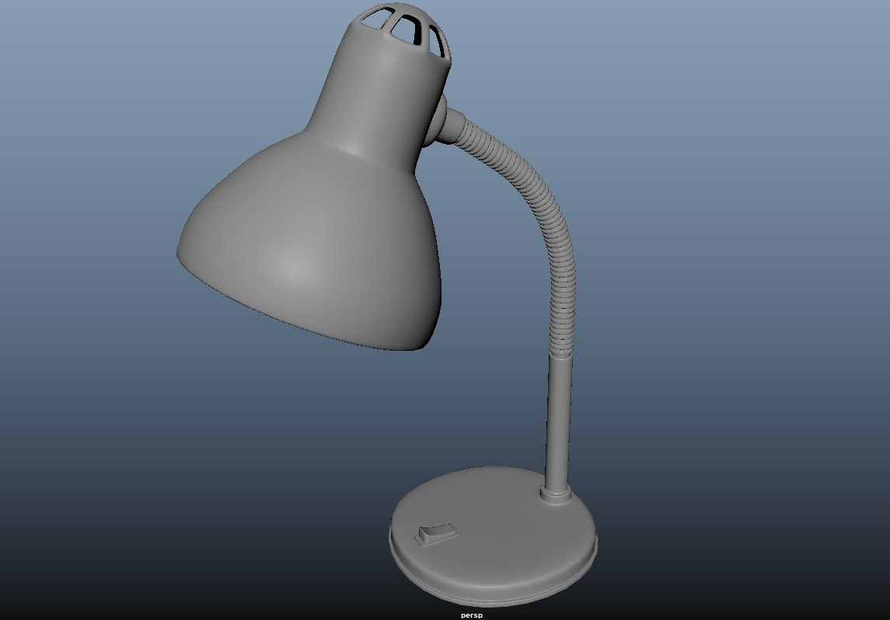
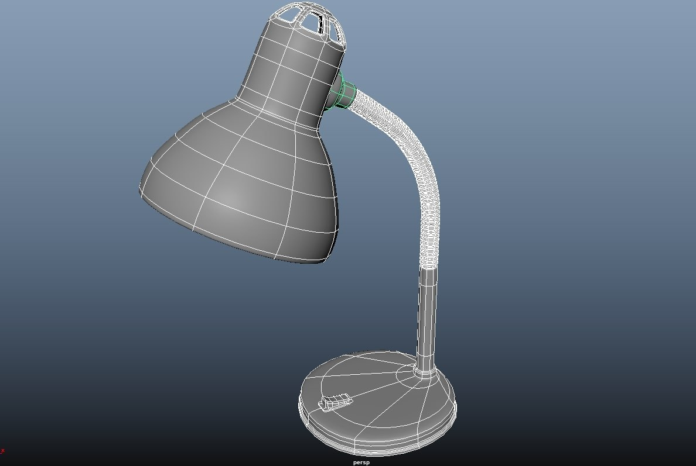
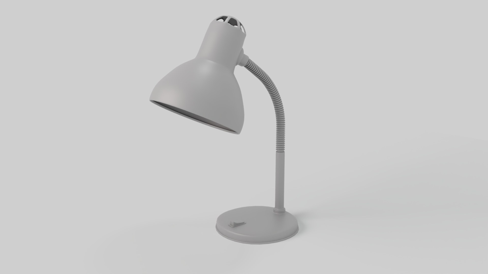
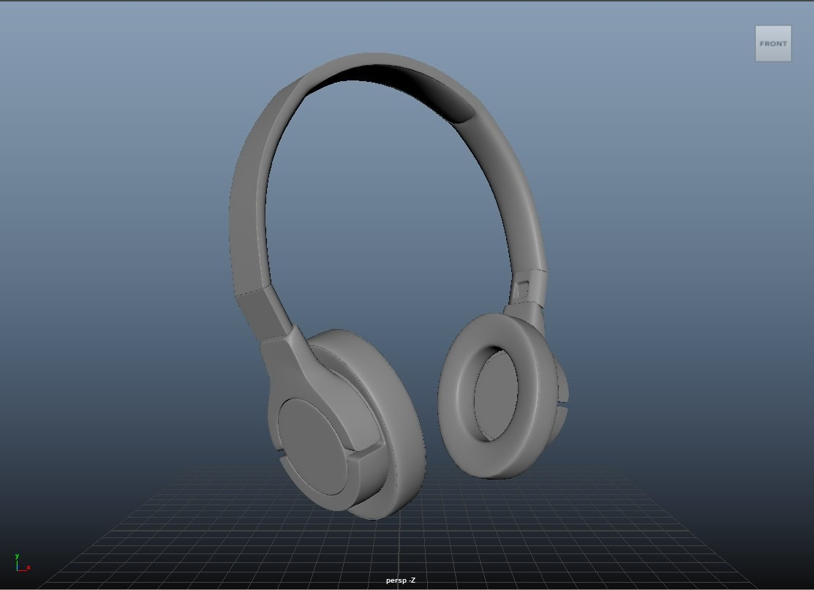
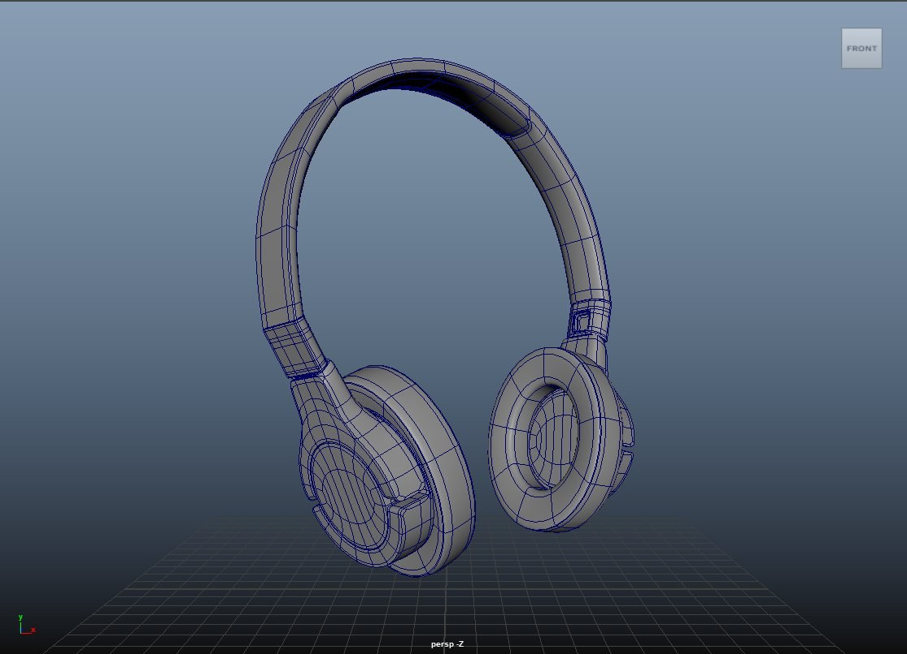

Una ricostruzione tridimensionale di un interno storico — una capanna da campo con oggetti d'epoca, mappe geografiche e strumenti di navigazione. La sfida principale è stata riprodurre l'illuminazione calda di una lanterna a olio attraverso l'uso di Cycles e materiali PBR di alta qualità.
Lampadada Tavolo
SoftwareMaya · Arnold
Anno2024
TipoHard Surface
Poligoni~45K
Wireframe / Shading
← Trascina per rivelare →
← WireframeShading →


↔
Processo

Descrizione
Modellazione hard surface di una lampada da tavolo classica in Maya. Particolare attenzione alla curva del collo flessibile, realizzato con una catena di cilindri procedurali. Il materiale è un metallo satinato reso con Arnold per un look realistico e contemporaneo.
CuffieWireless
SoftwareMaya · Arnold
Anno2024
TipoProduct Design
Poligoni~80K
Wireframe / Shading
← Trascina per rivelare →
← WireframeShading →


↔
Processo
Descrizione
Modellazione product design di cuffie wireless in Maya. La geometria è costruita con cura per le cuciture del padiglione auricolare e il meccanismo di regolazione. Il workflow include subdivision surface e normal maps per il dettaglio finale.